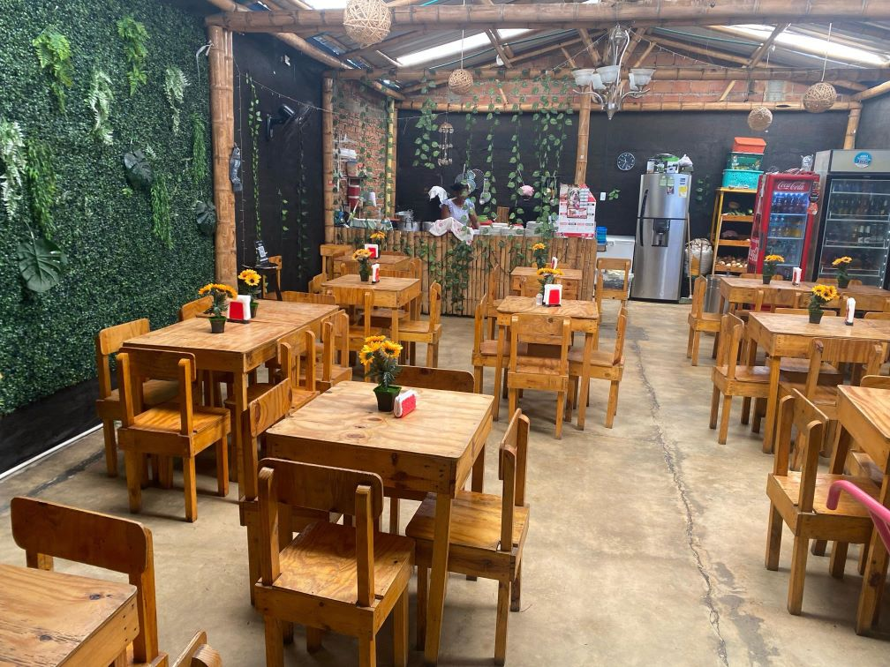

Instalaciones de La Tertulia
Estas son las instalaciones del Restaurante Bar, La Tertulia; sumergete en este apartado para que puedas observar de antemano las hermosas instalaciones con las que cuenta este restaurante, con una atmósfera muy tranquila y reconfortante, donde podras disfrutar de un rato agradable y así te puedas animar a venir a visitarnos.
Primer piso
